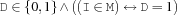

7.6 Reified Propagators
-
reified.isIn {FS.reified.isIn +I *M $D}
-
reified.areIn {FS.reified.areIn +Spec *M $Ds}Spec describes a list of individual elements Is. Is and Ds are lists of the same length such that every element
 of Ds reifies the presence of the corresponding element
of Ds reifies the presence of the corresponding element  of Is in the set M.
of Is in the set M. -
reified.include {FS.reified.include +D1 *M $D2}D2 reifies the presence of D1 in the set M. This propagator detects in contrast to
FS.reified.isInearlier if D1 is or is not constained in M.-
reified.equal {FS.reified.equal *M1 *M2 $D}D reifies the equality of M1 and M2.
-
reified.partition {FS.reified.partition +MVs +Is +MV $Ds}The propagator partitions the set value
MVby selecting elements from the list of set valuesMVs. The positive integers inIsdenote the cost resp. benefit of the corresponding set value inMVsif it is selected for the partition. Each element ofDsis either0or the corresponding integer value inIsdepending on whether the corresponding set value inMVsis part of the partition or not. Excluding a set value from the partition is done by constraining the corresponding element ofDsto0. An element inDsnot equal to0includes the corresponding set value inMVsin the partition. The propagator ensures a valid partition according to the values ofDs.